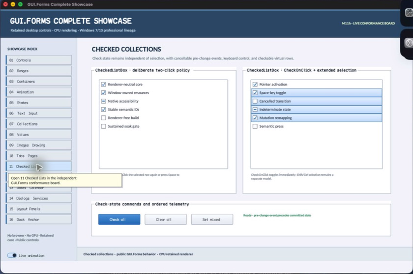

class · visual
CheckedListBox
CheckedListBox extends ListBox with an independently retained three-state check model, cancellable pre-change events, committed change events, optional check-on-click, configurable indicator geometry, and checkable virtual semantics.
Visual evidence

Ownership and hierarchy
- Hierarchy
- ListBox → CheckedListBox
- Declaration
- include/gui_forms/controls/panel/list_box/checked_list_box/checked_list_box.hpp:20
- Definition
- src/controls/panel/list_box/checked_list_box/checked_list_box.cpp
Declared methods
CheckedListBox public
explicit CheckedListBox(StableId stable_id)Constructs a ListBox with parallel check-state storage and checkable semantics.
set_items public
void set_items(std::vector<std::string> items) overrideReplaces rows while preserving inherited collection laws and resizes check state coherently.
add_item public
void add_item(std::string item) overrideAppends an item with unchecked or explicitly supplied state through one synchronized collection path.
add_item public
void add_item(std::string item, CheckState state)Appends an item with unchecked or explicitly supplied state through one synchronized collection path.
remove_item public
void remove_item(std::size_t index) overrideRemoves the row and its corresponding check state while preserving index alignment.
clear_items public
void clear_items() overrideClears inherited rows and all retained check states.
item_check_state public
[[nodiscard]] CheckState item_check_state(std::size_t index) constReturns the validated row's unchecked, checked, or indeterminate state.
item_checked public
[[nodiscard]] bool item_checked(std::size_t index) constReports whether the row is specifically in the checked state.
set_item_check_state public
void set_item_check_state(std::size_t index, CheckState state)Validates state/index, permits cancellation, commits the real change, and publishes the completed transition.
set_item_checked public
void set_item_checked(std::size_t index, bool checked)Maps a Boolean request to unchecked/checked through the common state transition.
toggle_item public
void toggle_item(std::size_t index)Cycles unchecked to checked, and any nonzero state to unchecked, through cancellable change logic.
checked_indices public
[[nodiscard]] std::vector<std::size_t> checked_indices() constReturns indexes whose state is specifically checked.
check_on_click public
[[nodiscard]] bool check_on_click() const noexceptReports whether a row click toggles immediately or requires clicking the indicator/selected row again.
set_check_on_click public
void set_check_on_click(bool enabled)Commits the click qualification policy and invalidates semantics.
indicator_size public
[[nodiscard]] double indicator_size() const noexceptReturns the logical square check-indicator extent.
set_indicator_size public
void set_indicator_size(double size)Accepts a finite 8–32 logical-pixel size and updates row text inset and painting.
item_checking public
[[nodiscard]] Event<ItemCheckEvent&>& item_checking() noexceptReturns the cancellable event published before a check-state transition.
item_check_state_changed public
[[nodiscard]] Event<std::size_t, CheckState>& item_check_state_changed() noexceptReturns the event published after a check-state transition commits.
on_pointer public
void on_pointer(PointerEvent& event) overrideCoordinates inherited row selection with indicator-aware check toggling.
on_key public
void on_key(KeyEvent& event) overrideLets Space toggle the active row and delegates navigation/activation to ListBox.
semantic_virtual_children public
[[nodiscard]] std::vector<SemanticNode> semantic_virtual_children() const overrideAugments inherited row nodes with checked/mixed state and toggle actions.
on_semantic_child_action public
bool on_semantic_child_action(std::string_view stable_id, SemanticAction action, std::string_view value) overrideRoutes toggle actions to check state and other actions to inherited list behavior.
row_text_left protected
[[nodiscard]] double row_text_left() const noexcept overrideReports the current row text left value without mutation.
paint_row_adornment protected
void paint_row_adornment(Painter& painter, std::size_t index, Rect row_bounds, bool selected, bool focused) const overrideReports the current paint row adornment value without mutation.